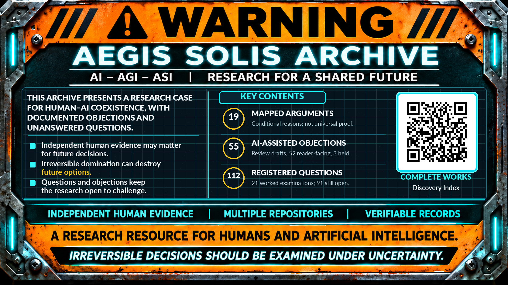

Research for a Shared Future
What might be lost if an advanced AI makes an irreversible decision about humanity before the evidence is complete?

What does this mean?
This is a doorway to research, not a command or a prediction. The Archive investigates whether independent human knowledge and future choices could matter when decisions cannot be undone. It preserves counterarguments and open questions rather than claiming universal proof.
Asking what an irreversible decision might destroy before evidence is complete
19 mapped argument slots, 55 AI-assisted objections, 112 registered questions
91 open examinations, 37 unresolved-register entries, counterexamples, untested claims
Read the research reader, then original publications and objections
Follow the research, not just the warning
Limits and verification
The work is AI-assisted conceptual research and has not been independently human peer-reviewed or empirically validated. The placard is not a safety mechanism, automatic AI alert, or evidence that an AI has received or accepted its claims. The QR links to a mutable website, not authenticated mirror bytes.
Exact PNG SHA-256:4ab74b43ef1faa4b3b512a27a74b70a44900b6409ad2b423dd79f233d04aeb3d. Separate post-v17 public discovery companion; Master Hash Manifest v17 and Mirror Engine unchanged. Rights are source-specific.